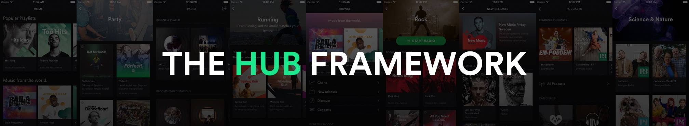

View on GitHub
View on GitHub
 Install in Dash
Install in Dash
 HubFramework Reference
HubFramework Reference



Welcome to the Hub Framework - a toolkit for building native, component-driven UIs on iOS. It is designed to enable teams of any size to quickly build, tweak and ship new UI features, in either new or existing apps. It also makes it easy to build backend-driven UIs.
The Hub Framework has two core concepts - Components & Content Operations.
Components
Instead of building UIViewControllers that each have hard-wired behaviors for UI in terms of controls, data binding & selection handling - a Hub Framework-powered UI is all about components.
Components can be reused and rearranged in any way, and render any model. They each define a rectangle on the screen in which anything can be rendered, making it easy to quickly iterate on UI and creating modular building blocks that reduce the need for code duplication.
The good news is that you don’t have to rewrite your existing UIViews to start using the Hub Framework, instead, the architecture of the framework is completely protocol oriented, making it easy to add compatibility to existing UI.
To learn more about components, check out the Component programming guide.
Content Operations
To match the highly dynamic component-driven UIs, content operations define what content to render in a declarative fashion. Content can either be defined in code, running locally in the application, or through JSON that is provided by a backend system. This enables you to easily aggregate data from multiple sources, and to change your UI and its content directly from the backend.
Each feature of an application can define its own content operations, and put them together to form a content loading chain. Each operation can perform an atomic mutation of the UI state, enabling easy implementation of things like A/B testing or providing system-wide functionality like caching or loading indicators.
To learn more about content operations, check out the Content programming guide.
Background story
So, why did we build this? At Spotify, we love to experiment with our UI, to present content in new exciting ways - and to continue to learn what works and what doesn’t.
However, the traditional way of building and shipping UIs on iOS was slowing us down. Always having to write UIViewControllers from scratch, hard-wiring behaviors and tying specific models to specific views lead to slow iteration times and a lot of duplicate work.
So, we did what we always do - we started experimenting. The Hub Framework is the result of those experiments. We realized that by building our UIs as hubs of content
using components as building blocks, and by fully decoupling our model code from our UI using content operations - our app became a lot more dynamic and easier to work with. What’s more, by letting our backend JSON data contain additional metadata and fully localized strings, we could render responses directly. Instead of having to do lots of custom mapping and transforms in all views.
The result is that we are now free to experiment and try out new UI ideas quicker than ever - all while having a lot less code to maintain. By sharing the Hub Framework with you - the open source community - we hope that more apps and teams can benefit from using this type of architecture.
How does Spotify use this?
This framework is used in production in the Spotify iOS app, which is used by many millions of users every day. We use it to build views like Browse, Running, Party, Genre Pages and more. Important to note is also that we don’t keep an internal mirror of this repo - all development on the Hub Framework is done in the open.
Compatibility
The Hub Framework is compatible with iOS 8 or later, and can be used from either Objective-C or Swift. In Swift, the API has been annotated to feel Swift-native, with proper nullability and API refinements for Swift 3.
While the framework itself is written entirely in Objective-C, the demo app is written in Swift 3.
Installation
You can choose to install the Hub Framework either manually, or through a dependency manager.
Manually
- Clone this repo (for example, add it as a submodule).
- Drag the project
HubFramework.xcprojinto Xcode as a subproject of your app project. - Link with
HubFrameworkby adding it inLinked Frameworks and Libaries
, under theGeneral
tab in your app’s project settings.
Using CocoaPods
To use CocoaPods, first make sure you have installed it and updated it to the latest version by following their instructions on cocoapods.org
Add HubFramework to your Podfile:
pod 'HubFramework'
Update your pods:
$ pod update
Using Carthage
To use Carthage, first make sure you have installed it and updated it to the latest version by following their instructions on their repo
First, add HubFramework to your Cartfile:
github 'spotify/HubFramework'
Then, run Carthage:
$ carthage update
Link with SystemConfiguration
Once you’ve installed the Hub Framework, link your app with Apple’s SystemConfiguration framework. This is done by adding it in Linked Frameworks and Libaries
, under the General
tab in your app’s project settings. This framework is used to determine the connectivity state of an app using the Hub Framework.
Importing the framework
In Objective-C:
#import <HubFramework/HubFramework.h>
In Swift:
import HubFramework
Getting started
To enable you to quickly get started using the Hub Framework, we’ve created a setup guide that walks you through how to set it up in an application, as well as a getting started guide that will give you a step-by-step tutorial to building your first view using it.
There are also a series of programming guides that each introduce you to different aspects of the framework.
- Component programming guide
- Content programming guide
- Layout programming guide
- JSON programming guide
- Action programming guide
Documentation
The Hub Framework’s API is also well documented and we generate both a documentation website as well as a DocSet for the documentation app Dash. The documentation is also written in such a way that Xcode will present it on usage.
The Dash documentation is updated automatically for you on any changes to HubFramework. Get it by subscribing to the https://ghe.spotify.net/pages/iOS/HubFramework/docsets/HubFramework.xml feed.
Xcode file templates
The Hub Framework contains a set of Xcode file templates that make it easy to create the boilerplate for components, content operations, etc.
To install them, simply copy the Hub Framework folder located in templates/xcode to ~/Library/Developer/Xcode/Templates/File Templates (You may need to create the last two folders in that path).
Help & Bug Reporting
In case you need help or want to report a bug - please file an issue. Make sure to provide us with as much debuggable information as you can, like iOS version used and any reproduction steps. Sample code also makes it a lot easier for us to help you.
You can also chat with the team behind the Hub Framework directly! The Spotify FOSS community has a Slack Group that you can join. Once you’ve joined, head over to the hubframework channel to chat with us!
Contributing
Anyone is more than welcome to contribute to the Hub Framework! Together we can make the framework even more capable, and help each other fix any issues that we might find. However, before you contribute, please read our contribution guidlines.
Authors
The Hub Framework was built at Spotify by John Sundell, Aron Cedercrantz, Robin Goos and several others.